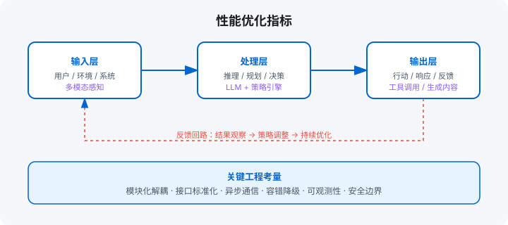

性能优化与成本控制
延迟优化 / 成本优化 / 负载均衡 / 边缘部署
学习目标
- 建立延迟 / 成本 / 稳定性的三维优化框架
- 识别 Agent 系统的架构陷阱与反模式
- 设计成本红线与预算治理机制
章节地图：14.1 延迟优化 → 14.2 成本优化 → 14.3 负载均衡 → 14.4 边缘部署 → 14.5 架构陷阱 → 14.6 成本红线 → 本章产出。

14.1 延迟优化：流式输出、并行工具调用、缓存
Agent 的端到端延迟主要消耗在 LLM 推理上。优化手段：
- 流式输出（Streaming）：不等完整响应，边生成边推送给用户。TTFB 从秒级降到百毫秒级。
- 并行工具调用：多个独立工具同时执行，而非串行。如同时查用户信息和订单历史。
- 缓存：相同 / 相似问题的回答缓存到 Redis，命中直接返回，跳过 LLM。缓存键用 embedding 相似度匹配。
14.2 成本优化：Prompt 压缩、模型路由
LLM 成本是 Agent 运营的最大开销。两个最有效的策略：
- Prompt 压缩：把长对话历史压缩成摘要，减少输入 token。如超过 20 轮，自动摘要前 15 轮。
- 模型路由：大模型做决策、小模型做执行。如 GPT-4o 负责规划，GPT-4o-mini 负责简单工具调用，成本降 50%+。
14.3 负载均衡：多模型/多实例的热备与降级
不要把 Agent 绑定到单一模型或单一实例：
- 多模型热备：主模型（如 GPT-4o）故障时自动切换到 Claude 3 / 国内模型。
- 多实例部署：Agent 无状态化，水平扩展实例，前端做负载均衡。
- 优雅降级：LLM 不可用时，切换到规则引擎或返回兜底话术。
14.4 边缘部署：端侧模型 + 云端大脑的混合架构
对于低延迟、隐私敏感的场景，可以把部分推理放到端侧：
- 端侧模型：轻量模型（如 Phi-3 Mini、Qwen2.5-3B）处理简单意图识别、分类。
- 云端大脑：复杂推理、长文本生成留在云端大模型。
- 混合路由：端侧先判断任务难度，简单的本地处理，复杂的再上传云端。
14.5 架构陷阱与反模式
性能问题往往不是「不够快」，而是「结构错了」。六个高频架构陷阱：
| 陷阱 | 症状 | 根因 | 解药 |
|---|---|---|---|
| 万物皆 Agent | 每个功能都「智能」，整体又贵又慢 | 把 Agent 当银弹 | 按 2.6 节光谱选型，非核心路径用规则 |
| 过早多 Agent | 单 Agent 没跑通就上编排 | 用复杂度掩盖核心问题 | 先单 Agent + 好工具，失败 case 按「视角缺失」归类后再加 |
| 提示词硬编码 | 改一句话要发版，A/B 测试无从谈起 | 提示词当代码常量 | 提示词配置化 + 版本化（第 8 章） |
| 无缓存设计 | 相同问题反复烧钱 | 每次调用都全量重算 | 语义缓存（相似问题直接复用答案，注明命中） |
| 旗舰模型跑分类 | 成本结构荒诞 | 懒得分档 | 难度路由：分类抽取用小模型（附录 B） |
| 忽视冷启动 | 高峰期第一波请求全部超时 | 无预热 / 无排队 | 预热 + 请求排队 + 降级到缓存答案 |
诊断顺序：先看缓存命中率（最便宜的优化），再看模型分档（最大的省钱项），最后才考虑并行化和架构调整。顺序反了，会把简单的成本问题做成复杂的工程事故。
14.6 成本红线与预算治理
Agent 的 Costs 是「开口的」——一次失控循环能烧掉一个月预算。治理三层：
- 单任务红线：token / 时间 / 金额三重上限，触线即熔断并告警（呼应 11.5 节）。
- 租户预算：按团队 / 客户分配月度预算，80% 预警、100% 限流。超预算走审批提额，不是自动扩容。
- 成本可归属：每次调用打上「租户 + 场景 + 提示词版本」标签，让 14.2 节的模型路由决策有数据支撑。
一个实用指标：单任务 P95 成本。均值会掩盖失控长尾，P95 才是用户实际感受到的成本。把它和 9.7 节的守护指标放在同一块仪表板上。
动手实验
- 给你的系统做一次 14.5 节陷阱自查，逐条打勾，中招的按「解药」列改进项。
- 统计最近 30 天的缓存命中率；如果低于 20%，设计一个语义缓存方案（含命中标注）。
- 配置单任务三重熔断阈值，人为触发一次，确认告警能在 1 分钟内到达负责人。
本地模型部署：Ollama 路线
三个现实理由让本地模型成为工程标配选项：数据不能出内网（合规）、调用量大了本地更便宜（成本）、离线环境要可用（可用性）。Ollama 是目前本地跑模型门槛最低的方式——一条命令拉起 OpenAI 兼容接口，你的 Agent 代码零改动切换。
# 1) 安装后终端执行：ollama run qwen2.5:14b（首次自动拉取）
# 2) 它默认监听 11434，且接口与 OpenAI SDK 兼容：
from openai import OpenAI
client = OpenAI(base_url='http://localhost:11434/v1', api_key='ollama')
resp = client.chat.completions.create(
model='qwen2.5:14b',
messages=[{'role': 'user', 'content': '用一句话解释什么是 Agent'}],
temperature=0.2,
)
print(resp.choices[0].message.content)
# 关键：base_url 做成配置项，本地/云端同一套 Agent 代码
# 显存参考（QLoRA 之外的推理侧）：7B 约需 6-8GB；14B 约需 12-16GB；32B 约需 24GB+
// TS 侧同样切 base_url 即可，无需改 Agent 逻辑
import OpenAI from 'openai';
const client = new OpenAI({
baseURL: 'http://localhost:11434/v1',
apiKey: 'ollama', // 占位，本地服务不校验
});
const resp = await client.chat.completions.create({
model: 'qwen2.5:14b',
messages: [{ role: 'user', content: '用一句话解释什么是 Agent' }],
temperature: 0.2,
});
console.log(resp.choices[0].message.content);
落地时按任务难度分层选模型（见附录 B 的分级表）：分类、抽取、改写这类结构化小任务用 7B–14B 足够，且可以批量并发；规划、复杂推理仍建议旗舰 API，或 32B 量级本地模型；中间再加一层路由——默认本地小模型，检测到「低置信/复杂意图」时升级到云端旗舰（附录 B 有完整的双语言路由实现）。另外注意：本地模型没有 API 侧的内容安全审核，第 11 章的输入输出过滤必须由你的应用层兜住。
本章产出：带成本仪表板的 Agent 运行时（双语言）
下面是一个最小运行时，演示流式输出、并行工具调用、成本统计。
Python 版本
"""
带成本仪表板的 Agent 运行时 —— Python
"""
from __future__ import annotations
import time
from dataclasses import dataclass, field
from typing import Any, Callable, Awaitable
@dataclass
class CostMetrics:
total_tokens: int = 0
total_latency_ms: float = 0.0
tool_calls: int = 0
cache_hits: int = 0
class AgentRuntime:
def __init__(self, model_cost_per_1k: float = 0.01):
self.model_cost = model_cost_per_1k
self.metrics = CostMetrics()
self.cache: dict[str, str] = {}
self.tools: dict[str, Callable] = {}
def register_tool(self, name: str, fn: Callable):
self.tools[name] = fn
async def run(self, user_input: str) -> dict:
# 1. 缓存检查
cache_key = hash(user_input)
if cache_key in self.cache:
self.metrics.cache_hits += 1
return {"text": self.cache[cache_key], "cached": True}
# 2. 模拟 LLM 决策（实际接 OpenAI / Anthropic）
start = time.time()
# 3. 并行工具调用（简化）
results = {}
if "搜索" in user_input or "search" in user_input.lower():
results["search"] = self.tools.get("search", lambda x: x)("query")
if "计算" in user_input or "calc" in user_input.lower():
results["calc"] = self.tools.get("calc", lambda x: x)("1+1")
self.metrics.tool_calls += len(results)
# 4. 生成最终答案
answer = f"基于 {', '.join(results.keys()) or '知识'} 的回答：{user_input}"
latency = (time.time() - start) * 1000
self.metrics.total_latency_ms += latency
self.metrics.total_tokens += len(user_input.split()) + len(answer.split())
self.cache[cache_key] = answer
return {"text": answer, "cached": False, "tools_used": list(results.keys())}
def cost_report(self) -> dict:
cost = self.metrics.total_tokens / 1000 * self.model_cost
return {
"total_tokens": self.metrics.total_tokens,
"tool_calls": self.metrics.tool_calls,
"cache_hits": self.metrics.cache_hits,
"estimated_cost_usd": round(cost, 4),
}
# 使用示例
async def main():
runtime = AgentRuntime()
runtime.register_tool("search", lambda q: f"结果: {q}")
runtime.register_tool("calc", lambda e: str(eval(e)))
r1 = await runtime.run("搜索一下 AI Agent 最新进展")
r2 = await runtime.run("搜索一下 AI Agent 最新进展") # 缓存命中
print("结果1:", r1["text"][:50])
print("结果2(缓存):", r2["cached"])
print("成本:", runtime.cost_report())
if __name__ == "__main__":
import asyncio
asyncio.run(main())TypeScript 版本
/**
带成本仪表板的 Agent 运行时 —— TypeScript
*/
interface CostMetrics {
totalTokens: number;
totalLatencyMs: number;
toolCalls: number;
cacheHits: number;
}
class AgentRuntime {
private cache = new Map();
private tools = new Map string>();
public metrics: CostMetrics = { totalTokens: 0, totalLatencyMs: 0, toolCalls: 0, cacheHits: 0 };
private modelCostPer1k: number;
constructor(modelCostPer1k = 0.01) { this.modelCostPer1k = modelCostPer1k; }
registerTool(name: string, fn: (input: string) => string) { this.tools.set(name, fn); }
async run(userInput: string): Promise> {
const cacheKey = String(hashCode(userInput));
if (this.cache.has(cacheKey)) {
this.metrics.cacheHits++;
return { text: this.cache.get(cacheKey), cached: true };
}
const start = Date.now();
const results: Record = {};
if (/搜索|search/i.test(userInput)) results.search = this.tools.get("search")?.(userInput) ?? "";
if (/计算|calc/i.test(userInput)) results.calc = this.tools.get("calc")?.("1+1") ?? "";
this.metrics.toolCalls += Object.keys(results).length;
const answer = `基于 ${Object.keys(results).join(",") || "知识"} 的回答：${userInput}`;
const latency = Date.now() - start;
this.metrics.totalLatencyMs += latency;
this.metrics.totalTokens += userInput.split(/\s+/).length + answer.split(/\s+/).length;
this.cache.set(cacheKey, answer);
return { text: answer, cached: false, toolsUsed: Object.keys(results) };
}
costReport(): Record {
const cost = (this.metrics.totalTokens / 1000) * this.modelCostPer1k;
return { ...this.metrics, estimatedCostUsd: Number(cost.toFixed(4)) };
}
}
function hashCode(s: string): number {
let h = 0;
for (let i = 0; i < s.length; i++) h = (Math.imul(31, h) + s.charCodeAt(i)) | 0;
return h;
}
// 使用示例
(async () => {
const runtime = new AgentRuntime();
runtime.registerTool("search", q => `结果: ${q}`);
runtime.registerTool("calc", e => String(eval(e)));
const r1 = await runtime.run("搜索一下 AI Agent 最新进展");
const r2 = await runtime.run("搜索一下 AI Agent 最新进展");
console.log("结果1:", (r1.text as string).slice(0, 50));
console.log("结果2(缓存):", r2.cached);
console.log("成本:", runtime.costReport());
})(); 本章产出
- Agent 延迟优化的三层手段（流式 / 并行 / 缓存）。
- 成本优化的两个杠杆（prompt 压缩 + 模型路由）。
- 带成本仪表板的 Agent 运行时，可统计 token、调用次数、缓存命中率、估算费用。